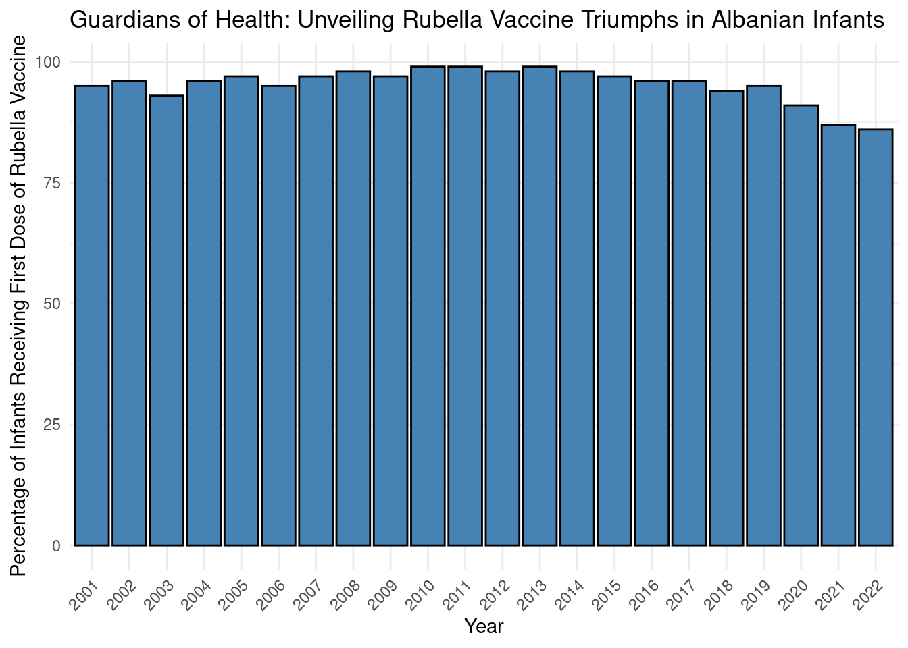
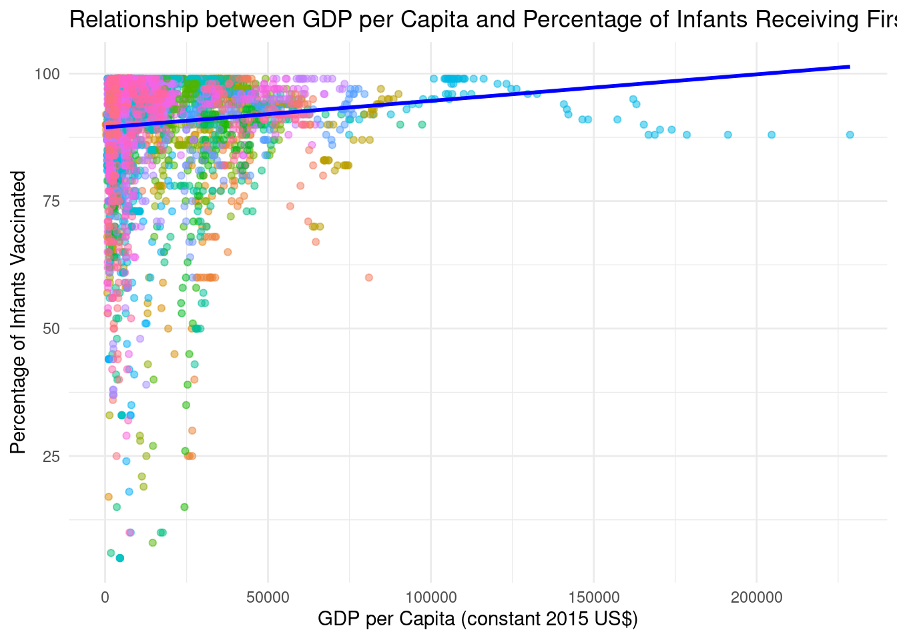
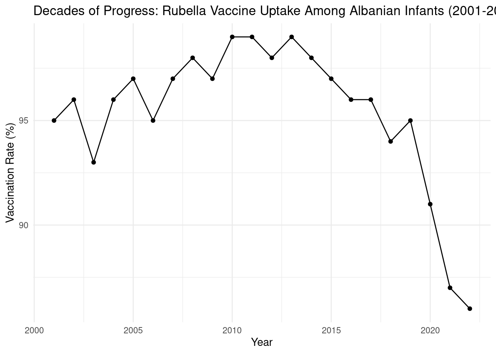

Warning: The following named parsers don't match the column names: GNI,
Inflation, Life_expectancy, Military_expenditure
head(unicef_indicator_1)
# A tibble: 6 × 14
country alpha_2_code alpha_3_code numeric_code indicator time_period obs_value
<chr> <chr> <chr> <dbl> <chr> <dbl> <dbl>
1 Albania AL ALB 8 Percenta… 2001 95
2 Albania AL ALB 8 Percenta… 2002 96
3 Albania AL ALB 8 Percenta… 2003 93
4 Albania AL ALB 8 Percenta… 2004 96
5 Albania AL ALB 8 Percenta… 2005 97
6 Albania AL ALB 8 Percenta… 2006 95
# ℹ 7 more variables: sex <chr>, unit_multiplier <chr>, unit_of_measure <chr>,
# observation_status <chr>, observation_confidentaility <chr>,
# time_period_activity_related_to_when_the_data_are_collected <lgl>,
# current_age <chr>
head(unicef_metadata)
# A tibble: 6 × 12
country alpha_2_code alpha_3_code numeric_code iso3c year `Population, total`
<chr> <chr> <chr> <dbl> <chr> <dbl> <dbl>
1 Afghan… AF AFG 4 AFG 1960 8622466
2 Afghan… AF AFG 4 AFG 1961 8790140
3 Afghan… AF AFG 4 AFG 1962 8969047
4 Afghan… AF AFG 4 AFG 1963 9157465
5 Afghan… AF AFG 4 AFG 1964 9355514
6 Afghan… AF AFG 4 AFG 1965 9565147
# ℹ 5 more variables: `GDP per capita (constant 2015 US$)` <dbl>,
# `GNI (current US$)` <dbl>, `Inflation, consumer prices (annual %)` <dbl>,
# `Life expectancy at birth, total (years)` <dbl>,
# `Military expenditure (% of GDP)` <dbl>
library(dplyr)
Attaching package: 'dplyr'
The following objects are masked from 'package:stats':
filter, lag
The following objects are masked from 'package:base':
intersect, setdiff, setequal, union
combined_data <- unicef_indicator_1 %>%inner_join(unicef_metadata, by =c("alpha_3_code", "time_period"="year"))
Warning in inner_join(., unicef_metadata, by = c("alpha_3_code", time_period = "year")): Detected an unexpected many-to-many relationship between `x` and `y`.
ℹ Row 484 of `x` matches multiple rows in `y`.
ℹ Row 1530 of `y` matches multiple rows in `x`.
ℹ If a many-to-many relationship is expected, set `relationship =
"many-to-many"` to silence this warning.
Warning: The following named parsers don't match the column names:
observation_confidentiality
# Create Albania dataalbania_data <- unicef_indicator_1 %>%filter(country =="Albania", indicator =="Percentage of surviving infants who received the first dose of rubella-containing vaccine") %>%select(time_period, obs_value) %>%arrange(time_period)# Create and print Albania vaccination chartalbania_vaccination_chart <-ggplot(albania_data, aes(x =as.factor(time_period), y = obs_value)) +geom_col(fill ="steelblue", color ="black") +labs(title ="Guardians of Health: Unveiling Rubella Vaccine Triumphs in Albanian Infants",x ="Year",y ="Percentage of Infants Receiving First Dose of Rubella Vaccine") +theme_minimal() +theme(axis.text.x =element_text(angle =45, hjust =1))print(albania_vaccination_chart)

# Filter and join dataanalysis_data <- unicef_indicator_1 %>%filter(indicator =="Percentage of surviving infants who received the first dose of rubella-containing vaccine") %>%inner_join( unicef_metadata %>%select(alpha_3_code, year, `GDP per capita (constant 2015 US$)`),by =c("alpha_3_code", "time_period"="year") )
Warning in inner_join(., unicef_metadata %>% select(alpha_3_code, year, : Detected an unexpected many-to-many relationship between `x` and `y`.
ℹ Row 484 of `x` matches multiple rows in `y`.
ℹ Row 1530 of `y` matches multiple rows in `x`.
ℹ If a many-to-many relationship is expected, set `relationship =
"many-to-many"` to silence this warning.
# Check to ensure data is correctly preparedprint(head(analysis_data))
# A tibble: 6 × 15
country alpha_2_code alpha_3_code numeric_code indicator time_period obs_value
<chr> <chr> <chr> <dbl> <chr> <dbl> <dbl>
1 Albania AL ALB 8 Percenta… 2001 95
2 Albania AL ALB 8 Percenta… 2002 96
3 Albania AL ALB 8 Percenta… 2003 93
4 Albania AL ALB 8 Percenta… 2004 96
5 Albania AL ALB 8 Percenta… 2005 97
6 Albania AL ALB 8 Percenta… 2006 95
# ℹ 8 more variables: sex <chr>, unit_multiplier <chr>, unit_of_measure <chr>,
# observation_status <chr>, observation_confidentaility <chr>,
# time_period_activity_related_to_when_the_data_are_collected <lgl>,
# current_age <chr>, `GDP per capita (constant 2015 US$)` <dbl>
# Load the packageslibrary(ggplot2)library(dplyr)# Create and print the scatterplot with regressionscatterplot_with_regression <-ggplot(analysis_data, aes(x =`GDP per capita (constant 2015 US$)`, y = obs_value)) +geom_point(aes(color = alpha_3_code), alpha =0.5) +geom_smooth(method ="lm", color ="blue", se =FALSE) +labs(title ="Relationship between GDP per Capita and Percentage of Infants Receiving First Dose of Rubella Vaccine",x ="GDP per Capita (constant 2015 US$)",y ="Percentage of Infants Vaccinated") +theme_minimal() +theme(legend.position ="none")print(scatterplot_with_regression)
`geom_smooth()` using formula = 'y ~ x'
Warning: Removed 174 rows containing non-finite outside the scale range
(`stat_smooth()`).
Warning: Removed 174 rows containing missing values or values outside the scale range
(`geom_point()`).

if (!requireNamespace("ggplot2", quietly =TRUE)) install.packages("ggplot2")if (!requireNamespace("dplyr", quietly =TRUE)) install.packages("dplyr")library(ggplot2)library(dplyr)albania_data <- unicef_indicator_1 %>%filter(country =="Albania", indicator =="Percentage of surviving infants who received the first dose of rubella-containing vaccine") %>%select(time_period, obs_value)time_series_plot <-ggplot(albania_data, aes(x = time_period, y = obs_value)) +geom_line() +geom_point() +labs(title ="Decades of Progress: Rubella Vaccine Uptake Among Albanian Infants (2001-2022)", x ="Year", y ="Vaccination Rate (%)") +theme_minimal()print(time_series_plot)

library(dplyr)albania_data <- unicef_indicator_1 %>%filter(country =="Albania", indicator =="Percentage of surviving infants who received the first dose of rubella-containing vaccine") %>%select(time_period, obs_value) %>%arrange(time_period) print(nrow(albania_data))
[1] 22
World Map Chart
Title: “Global Canvas of Care: Mapping Rubella Vaccination Rates Worldwide”
Story: This world map chart artistically unfolds the story of global health initiatives by depicting average vaccination rates for the rubella vaccine by country. It vividly color-codes each nation to highlight the disparities in public health efforts, offering a panoramic view of areas where interventions have been effective and others where challenges remain. This map serves as a crucial tool for understanding and improving global strategies to ensure every infant receives critical early vaccinations.
Bar Chart
Title: “Steady Shields: Albania’s Commitment to Infant Health (2001-2022)”
Story: The bar chart chronicles Albania’s dedication to public health through the lens of rubella vaccination from 2001 to 2022. Each bar measures the annual percentage of infants vaccinated, showcasing slight fluctuations but predominantly high coverage. This visual narrative reinforces the significance of Albania’s sustained public health policies aimed at maintaining robust immunization levels among infants, safeguarding a young generation against a preventable threat.
Scatterplot with a Linear Regression Line
Title: “Economic Prosperity and Public Health: Correlating GDP with Rubella Vaccination Rates”
Story: This scatterplot draws a direct line between economic health and vaccination success. By correlating GDP per capita with the percentage of infants receiving the first dose of the rubella vaccine, the plot highlights how economic well-being influences public health outcomes. Countries with higher GDP per capita generally achieve better vaccination rates, underscoring the critical role of economic stability in supporting effective healthcare delivery and enhancing overall public health.
Time-Series Chart
Title: “A Timeline of Tenacity: Albania’s Vaccination Vigilance Over the Years”
Story: The time-series chart traces the pulse of Albania’s health sector through its annual rubella vaccination rates from 2001 to 2022. With each point connected by lines, the chart demonstrates the consistent effort to protect infants against rubella, highlighting the country’s commitment to public health despite minor year-to-year variations. This visualization not only reflects historical achievements but also inspires continued vigilance in vaccination efforts.